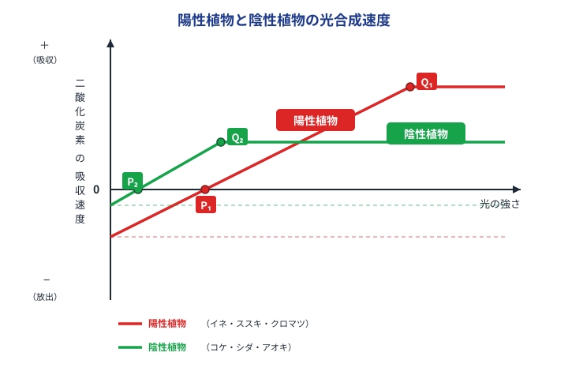

光の好みで植物を見分けよう。グラフの読み取りも練習！
植物には「強い光が好き」な植物と「弱い光でもOK」な植物がいます。BL02で学んだ補償点・光飽和点の値を比べると2種類の違いがはっきり見えます。

図1：陽性植物（赤）と陰性植物（緑）の光合成速度のちがい
| 特徴 | 陽性植物 | 陰性植物 |
|---|---|---|
| 好む光 | 強い光 | 弱い光でもOK |
| 補償点（P） | 大きい（強い光が必要） | 小さい（暗くても釣り合う） |
| 光飽和点（Q） | 大きい（強い光まで速度UP） | 小さい（弱い光で頭打ち） |
| 最大光合成速度 | 大きい | 小さい |
| 呼吸速度 | 大きい | 小さい |
✅ ミニテスト①（陽性・陰性植物）
Q1. 陽性植物と陰性植物のグラフを比べたとき、補償点が大きいのはどちらか。
Q2. 弱い光の環境（暗い場所）では、どちらの光合成速度が大きいか。
✅ ミニテスト②（グラフの4ポイント）
Q1. 陽性植物と陰性植物のグラフが交差する点より「弱い光側」では、どちらのCO₂吸収速度が大きいか。
Q2. 陽性植物・陰性植物について正しい記述はどれか。
☀️ 陽性植物（強い光を好む）
🌿 陰性植物（弱い光でも育つ）
✅ ミニテスト③（植物の例）
Q1. 次のうち陰性植物のみの組合せはどれか。
Q2. 補償点・光飽和点がともに大きいのはどちらか、語群から選ぼう。
同じ植物でも、生えている場所の明るさで葉のつくりが変わります。
| 特徴 | 陽葉（ようよう） | 陰葉（いんよう） |
|---|---|---|
| 場所 | 木の上・日当たりよい | 木の下・日当たり悪い |
| 葉の厚さ | 厚い | 薄い |
| 葉の大きさ | 小さい | 大きい（光を多く集めるため） |
| 色 | 濃い緑色 | 薄い緑色 |
| 光飽和点 | 大きい | 小さい |
✅ ミニテスト④（陽葉・陰葉）
Q1. 陽葉の特徴として正しいものはどれか。
Q2. 陰葉が陽葉より大きいのはなぜか。
高認・共通テストで頻出の「会話文＋グラフ」形式です。図を見ながら考えよう。
先生：スギの森の中は夏でも地面まで光がほとんど届かず、とても薄暗いです。スギ林の林床でも育てる植物をウ、イネのように強い光を好む植物をエといいます。林床の光の強さが図のCくらいだとすると、イネが生育できない理由がわかります。
（図）A＝強い光を好む植物、B＝弱い光でも育つ植物の光合成曲線。C・D・E は光の強さの位置。
問1. 空欄「ウ」（弱い光でも育つ植物）に入る語句はどれか。
問2. 空欄「エ」（強い光を好む植物）に入る語句はどれか。
問3. 「林床の光の強さ C」でイネが育てない理由として正しいものはどれか。